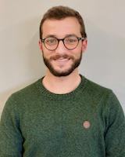

João Pedro Sousa Ferreira
Chief Data Scientist, DigestAID · Invited Assistant Professor, Faculty of Engineering, University of Porto
I lead AI and data at DigestAID, a University of Porto spin-off that grew out of my research, where deep-learning systems for gastrointestinal imaging have gone from prototypes to regulated medical software in routine clinical use. I also teach programming, numerical analysis and mechanical design at FEUP and supervise PhD and MSc students there.
I trained as a mechanical engineer (PhD, University of Porto, 2021). My work sits between artificial intelligence and computational mechanics: medical image analysis on one side, physics-informed models of soft biological tissue on the other.
92 papers in international journals among 249 scientific outputs (h-index 23) · 8 patent families, with patents granted in Portugal, the US, Europe and the UK · 4 AI products taken through FDA/EMA submissions as Software as a Medical Device under ISO 13485.

Experience
-
2026 – present
Chief Data Scientist, DigestAID, Porto
AI and data strategy for medical imaging: research roadmap, regulated ML engineering (SaMD) and the data-science team.
-
2021 – 2026
Head Data Scientist, DigestAID, Porto
Took AI for medical imaging from research prototypes to Software as a Medical Device in clinical use. Built and led a team of eight data scientists; four products through FDA/EMA submissions under ISO 13485.
-
2020 – present
Invited Assistant Professor, Department of Mechanical Engineering, FEUP
Computer Programming, Numerical Analysis, Calculus, Linear Algebra, Technical Drawing, Mechanical Design Drawing. Supervising 2 PhD theses; 14 MSc dissertations supervised. Invited Teaching Assistant 2017–2020.
-
2014 – 2024
Researcher, INEGI / LAETA, University of Porto
Computational biomechanics and AI. Principal Investigator of FCT project PTDC/EME-APL/1342/2020 (€249k, bladder-cancer cell mechanics), an NVIDIA Applied Research Accelerator grant and an FCT advanced-computing allocation; team member in six further national and European projects. Consultancy in structural and image analysis, including a medical-device biocompatibility study for PROMEDON.
-
2019
Visiting Researcher (Fulbright), Cleveland Clinic / Case Western Reserve University, Cleveland, OH
Biomechanics of pelvic-floor tissues and smooth-muscle cells.
Selected work
-
Lesion detection in capsule endoscopy · DigestAID, 2020–
Deep-learning detection and characterisation of small-bowel and colon lesions, bleeding, ulcers and erosions in capsule-endoscopy video, including Crohn's disease. Three patent families; the small-bowel tool is in routine use at a partner hospital and was developed under an NVIDIA Applied Research Accelerator grant.
-
Cholangioscopy and endoscopic ultrasound · DigestAID, 2021–
Automatic diagnosis of malignant biliary strictures in digital cholangioscopy (European patent granted) and of pancreatic cystic lesions in EUS. The cholangioscopy work received an ACG 2022 top-3 abstract award.
-
Manometry, upper GI and colposcopy · DigestAID, 2021–
Classification of high-resolution anorectal manometry exams from the pressure time series (Portuguese patent granted); detection of lesions in the oesophagus, stomach and duodenum in conventional endoscopy; and, more recently, gynaecologic lesions in colposcopy.
-
hyper-surrogate · 2021–
Python package that generates synthetic stress–strain data from hyperelastic constitutive models and trains surrogate models on it. Started under FCT advanced-computing project CPCA/A0/7363/2020 on generative models for material characterisation.
-
Surrogate models for composite laminates · 2022
Regressors that replace finite-element runs when predicting the mechanical response of composite laminates, with a small interactive tool for exploring lay-ups.
-
UMAT-ABAQUS · 2015–
Fortran user-material subroutines for soft biological tissue in Abaqus: hyperelastic, anisotropic and damage models used in my PhD work on pelvic-floor mechanics and in the phase-field damage paper below.
-
AFM force-curve analysis · 2019
MATLAB library for processing atomic-force-microscopy force–distance curves and extracting cell stiffness from indentation data, written during the Fulbright stay at the Cleveland Clinic.
-
Side projects
climb-sensei, pose estimation on climbing footage to extract kinematics (private); genetic_engine, a small evolutionary-optimisation library; LEM_PCI, algorithms and numerical methods in Python and MATLAB used as teaching material.
Education
-
2021
PhD in Mechanical Engineering, University of Porto — unanimously approved, Cum Laude
Thesis: A cell-based approach to early detect female pelvic organ prolapse
-
2014
MSc in Mechanical Engineering, Mechanical Design profile, FEUP
Thesis: Elasto-plastic analysis of structures using an isogeometric formulation
Awards and service
- 2022 – 2024
Poster distinctions, Digestive Disease Week (DDW)
- 2022
Top-3 abstract award, American College of Gastroenterology — deep learning for malignant biliary strictures in digital cholangioscopy
- 2021
Selected scientific publication, IACOBUS — characterisation of hyperelastic and damage behaviour of tendons
- 2019
Travel award, Basic Sciences Symposium, American Urological Association
- 2018
Fulbright incentive award for research in the USA (Cleveland Clinic / CWRU)
- 2018
Best abstract, Mediterranean Incontinence and Pelvic Floor Society annual meeting, Rome
- Ongoing
Review Editor, Frontiers in Bioengineering and Biotechnology; reviewer for journals in applied mechanics, computer vision and gastroenterology; 28 PhD and MSc jury memberships.